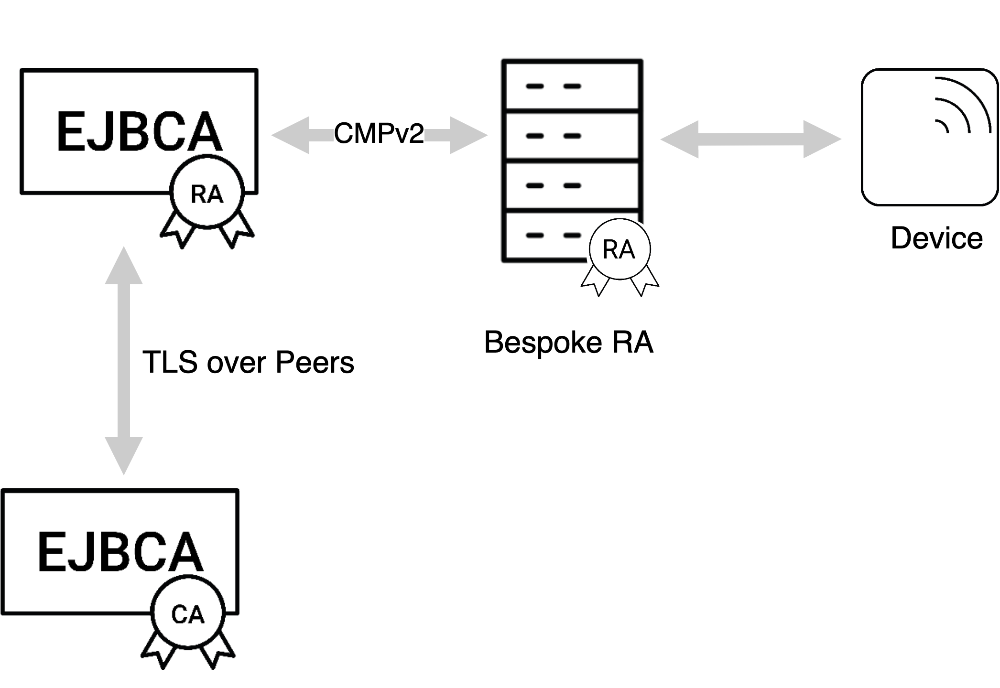

Using CMP with 3GPP
To find out more about how to configure CMP for 3GPP and common operations and test, see the CMP 3GPP Operations page.
This describes the CMP 3GPP standard and EJBCA's integration with it. It contains extracts from the 3GPP specification 3GPP TS 33.310. An entire example of a CMP setup is described in the 3GPP standards, refer to 3GPP Specifications.
Terminology
The following terms are important for understanding the underlying process of 3GPP (33.310).
|
Term |
Meaning |
|
MNO |
Mobile Network Operator. The MNO is the customer of this PKI solution, i.e. the MNO will be the CA. The MNO buys eNodeB's from a Vendor. |
|
eNodeB |
A base station in 4G and 5G networks, i.e. a device. |
|
Vendor |
A vendor of eNodeB's, i.e. a telco equipment manufacturer such as Ericsson. |
|
Vendor CA |
A CA operated by the Vendor. In this context, we only see certificates from the Vendor CA and are not setting up the Vendor CA. |
|
Operator CA |
A CA operated by the MNO, issuing certificates to eNodeB's in order for these to communicate in the MNOs network. In this context we are setting up the Operator CA. |
Overview
In practice, the main purpose of using CMP 3GPP is to allow a device to automatically provision itself with a device certificate without the vendor being required to expose their full PKI to the manufacturer. A typical use case is an IOT device vendor, whose devices are manufactured by a second party, and the vendor requires the devices to be enrolled to their PKI. The vendor may wish to prohibit the manufacturer from producing their own pirated devices that connect to the vendor's PKI, or is simply unwilling to expose their PKI directly to the manufacturer in order to enroll the devices on site.
To solve this, the following workflow is usually followed:
The factory site is provisioned with a Vendor CA, separate from the main PKI intended to be used. The Vendor CA certificate is signed by the vendor's PKI.
The vendor prepares a series of unique identifiers (i.e serial numbers) for each device to be produced. This ensures that only the authorized set of devices will be able to enroll against the vendor's PKI.
As each device is manufactured it produces its own key pair. The public key is signed by the Vendor CA, and the device is initially provisioned with a Vendor Certificate (which includes the serial number).
As each device comes online it enrolls to the vendor's PKI over CMP with 3GPP, using the Vendor Certificate to authenticate itself.
The device then receives its device certificate from the vendor's PKI.

Generalized Workflow
This section describes the general CMP 3GPP workflow, purely for overview purposes. The EJBCA specific workflow is slightly modified, see EJBCA Specific Workflow.
The following figure shows the general deployment architecture for certificate enrollment of a device at an operator PKI.
The device is pre-provisioned with a public-private key pair by the vendor, and has the vendor-signed certificate of its public key pre-installed.
On initial contact to the operator network, the device establishes a communication channel to the RA/CA of the vendor. Using a CMPv2, a request for a certificate is sent to the RA/CA. The network authenticates the messages from the device based on the vendor-signed certificate of the device and the vendor root certificate pre-installed in the network. The device checks the integrity protection on the messages from the RA/CA based on the operator root certificate provisioned in the device. In a response message, the device receives the operator-signed certificate. During the execution of the CMPv2 protocol, the device has to provide a successful proof of possession of the private key associated to the public key in order to be certified.
The operator root certificate may be provisioned in the device prior to or during the CMPv2 protocol run. The protection of the operator root certificate during provisioning may be decided by the operator security policy. If an operator root certificate provisioned prior to the CMPv2 protocol run is available, the device shall use it. Otherwise, the device shall use the operator root certificate provisioned during the CMPv2 run. If no operator root certificate is provisioned at all, then the device shall abort the procedure.
If the operator wants to renew the device certificate, the same procedure will be executed with the old operator-signed device certificate taking the place of the vendor-signed certificate of the initial enrollment.
The following figure describes the general message flow in both cases:

The device discovers the RA/CA address.
The device generates the private/public key pair to be enrolled in the operator CA, if this is not pre-provisioned.
The device generates the Initialization Request (IR). The CertReqMsg inside the request specifies the requested certificate. If the suggested identity is known to the device, it includes this in the subject field. To provide proof of possession, the device generates the signature for the POPOSigningKey field of the CertReqMsg using the private key related to the public key to be certified by the RA/CA. The device signs the request using the vendor provided public key, and includes the digital signature in the PKIMessage. Its own vendor signed certificate and any intermediate certificates are included in the extraCerts field of the PKIMessage carrying the initialization request.
The device sends the signed initialization request message to the RA/CA.
The RA/CA verifies the digital signature on the initialization request message against the vendor root certificate using the certificate(s) sent by the device. The RA/CA also verifies the proof of the possession of the private key for the requested certificate.
The RA/CA generates the certificate for the device. If the suggested identity of the device is not included in the initialization request message, the RA/CA determines the suggested identity, based on the vendor provided identity contained in the device certificate. The RA/CA may also replace a suggested identity sent by the device with another identity based on local information.
The RA/CA generates an Initialization Response (IP) which includes the issued certificate. The RA/CA signs the response with the RA/CA private key (or the private key for signing CMP messages, if separate), and includes the signature, the RA/CA certificate(s) and the operator root certificate in the PKIMessage. The appropriate certificate chains for authenticating the RA/CA certificate(s) are included in the PKIMessage.
The RA/CA sends the signed initialization response to the device.
If the operator root certificate is not pre-provisioned to the device, the device extracts the operator root certificate from the PKIMessage. The device authenticates the PKIMessage using the RA/CA certificate and installs the device certificate on success.
The device creates and signs the CertificateConfirm (certconf) message.
The device sends the PKIMessage that includes the signed CertificateConfirm to the RA/CA.
The RA/CA authenticates the PKI Message that includes the CertificateConfirm.
The RA/CA creates and signs a Confirmation message (pkiconf).
The RA/CA sends the signed PKIMessage including the pkiconf message to the device.
The device authenticates the pkiconf message.
EJBCA Specific Workflow
To use EJBCA with 3GPP, the generalized setup described above is slightly adjusted. The following describes the CMP operational modes Client mode and RA mode.
Direct CA - Device Communication
In the case of direct contact between EJBCA and the device, EJBCA operates in client mode. Each device has a corresponding end entity in EJBCA. The initial enrollment request/certification request is sent by the device to EJBCA as a CMP request signed by the key provided to the device by the vendor. The vendor issued certificate is attached to the request in the extraCerts field. EJBCA will authenticate the request by checking that the certificate in extraCerts was issued by the vendor CA (an external CA in EJBCA). If the authentication succeeds, EJBCA will issue a certificate for the device and includes it in the CMP response message.
In the case of direct contact between EJBCA and the device, EJBCA operates in client mode. Each device has a corresponding end entity in EJBCA. The initial enrollment request/certification request is sent by the device to EJBCA as a CMP request signed by the key provided to the device by the vendor. The vendor issued certificate is attached to the request in the extraCerts field. EJBCA will authenticate the request by checking that the certificate in extraCerts was issued by the vendor CA (an external CA in EJBCA). If the authentication succeeds, EJBCA will issue a certificate for the device and includes it in the CMP response message.
For future communication, when the device needs to update its certificate, the old EJBCA obtained certificate is used to authenticate the update or key renewal request. This is typically done by the device signing the update request with its private key and attaching its certificate (the one to be renewed) in the extraCerts field in the CMP message.
For the required configuration, see the CMP 3GPP Operations page .
CA - Device Communication Through a bespoke RA
In the case of indirect communication between EJBCA and the device, EJBCA operates in RA mode. The device communicates with the CA through a third device/organization that acts as an RA. The RA has a corresponding end entity in EJBCA with an issued certificate. This certificate is transported to the RA manually. The RA is also registered in EJBCA as an administrator and is given the necessary privileges to process CMP requests on behalf of the device.

Both initialization/certification requests and certificate update requests regarding the devices, are expected to be signed by the RA. Any changes or updates of the RA certificate are expected to be performed directly in EJBCA and transported to the RA manually.
For the required configuration, see the CMP 3GPP Operations page .